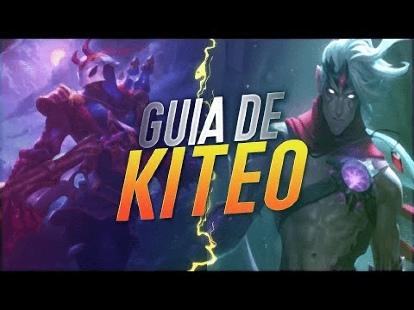

adcarry guide
Kiteo
¿Qué es el kiteo?
El kiteo es aprovechar el tiempo de recarga del auto ataque de tu campeon para moverte, ya que en ese lapso no puedes hacer daño.
¿Para qué sirve?
Sirve para que sea más dificil que el enemigo logre alcanzarte, ya sea con ataques básicos (si es melee) o con habilidades. Saber kitear o no puede ser la diferencia entre ser un buen adc o uno pésimo, ya que si no sabes kitear es muy dificil que puedas posicionarte bien a la hora de tradear o en las teamfights.
Configuración de kiteo
En el siguiente video se explica como configurar las teclas para poder kitear de la manera más óptima.
Tipos de adc

Para poder jugar correctamente adc, primero hay que saber cual va a ser tu rol dentro de la partida, y eso depende mucho de que clase de tirador estes jugando.
Utilidad
La función de este tipo de adc es ser útiles para el equipo, como indica su nombre, ya que tienen habilidades que les permiten iniciar una pelea facilmente, hacer disengage de una pelea o simplemente pueden buffear al team con curaciones y escudos. Suelen pickearse cuando el equipo tiene daño suficiente para las peleas en equipo, pero no tiene utilidad. Los siguientes campeones son adc de utilidad:
Ashe
Sivir
Senna

Kalista
Hipercarrys
Este tipo de adc suele brillar en el juego tardio y si se feedean pueden carrear la partida solos, pero en el juego temprano suelen sufrir mucho, por lo que necesitan de soportes que puedan hacerle peel, para que puedan escalar. Los siguientes campeones son adc hipercarrys:
Aphelios
Draven
Jinx

Kaisa
Kog Maw
Tristana
Twitch
Vayne
Xayah
adc casters
Este tipo de adc dependen principalmente de sus habilidades para meter la mayor cantidad de daño, por lo general son skill shots. Esto no quiere decir que no tengan que usar sus ataques básicos. Los siguientes campeones son adc casters:
Ezreal
Jhin

Lucian
Miss Fortune
Samira
Varus
adc de asedio
Este tipo de adc son campeones que tienen muchisima limpieza de oleadas y usan sus ataques basicos y/o habilidades para desgastar al enemigo, para que este no pueda pelear. Los siguientes campeones son adc de asedio:
Micro game como adc
Posicionamiento
El posicionamiento del adc es la clave para ganar las peleas en equipo, ya que es el encargado de meter la mayor cantidad de dps (daño por segundo) posible, y si muere al comienzo de la pelea, el equipo no va a poder hacer nada. En el siguiente video se explica como posicionarse en las team fights:
Triangulación
En el siguiente video se explica como tradear en la bot lane, a través de la triangulación:
Hechizos de invocador
Los hechizos de invocador que suelen llevar los adcarrys son:
Flash
Este hechizo se lleva en el 100 porciento de los casos, ya que es una herramienta muy util para el reposicionamiento.
Extenuar
El extenuar es un hechizo que se lleva para counterear a aquellos campeones con mucho burst o tiradores con corto alcance.
Curación
Este hechizo es bueno para kitear, ya que nos proporciona velocidad de movimiento, sirve para reposicionarte y muchas veces puede salvarte la vida. Personalmente no me gusta llevarlo ultimamente.
Purificación
Este hechizo es muy bueno contra campeones que tengan mucho cc, como leona en fase de lineas, o campeones con un stun inesquivable como puede ser twisted fate.
Macro game como adc
Itemización
En la página de avanzado ya se explicó la tienda y los objetos de manera general, ahora se va a explicar de manera detallada los items que se suelen armar los adc.
Wardeo
Muchas veces se suele decir que wardear depende unicamente del soporte y esto es completamente falso. El soporte es quien más debe wardear, pero no es el único. En el siguiente video se va a explicar como debe ayudar con la visión el adc: